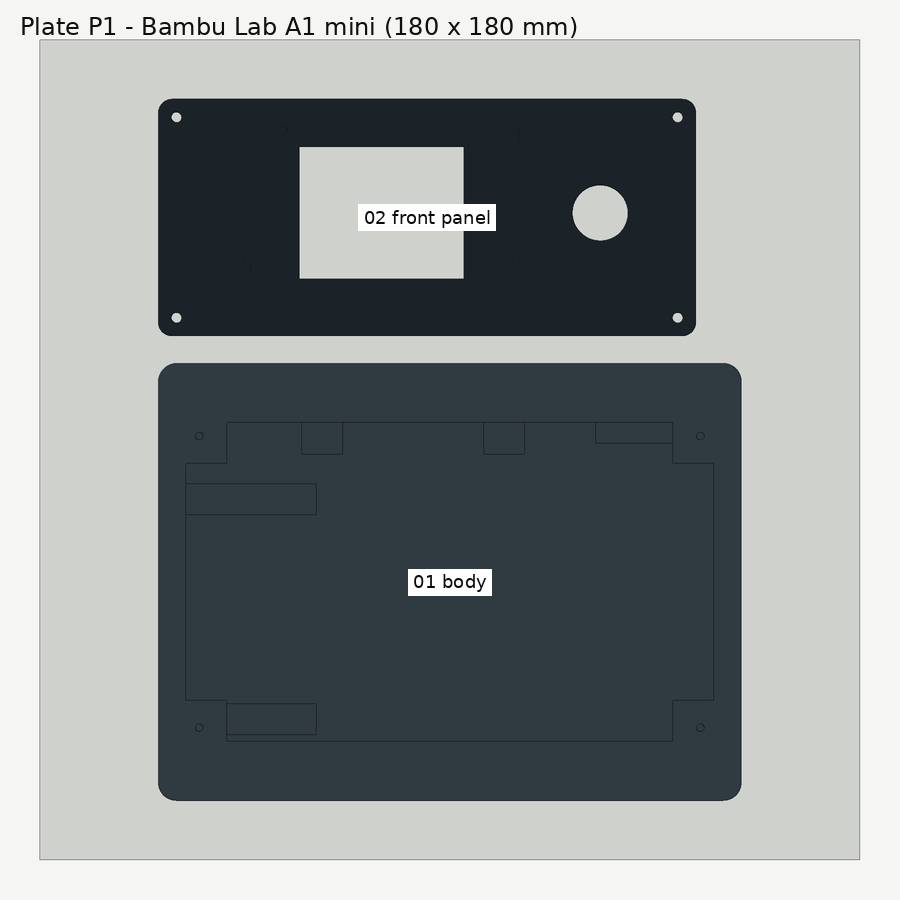
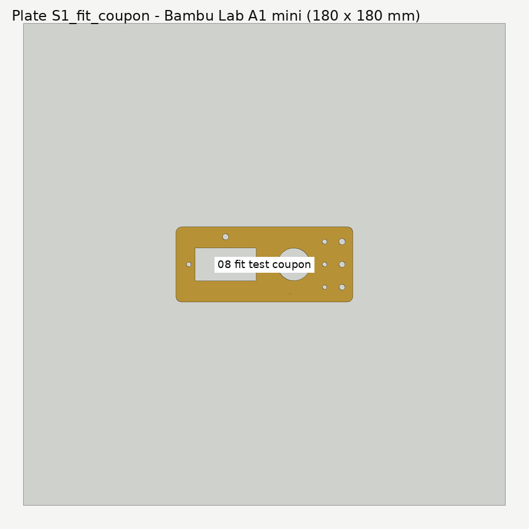

Printing
Target printer: Bambu Lab A1 mini (180 × 180 × 180 mm), 0.4 mm nozzle, PLA. Any printer with a
build plate of at least 176 × 176 mm will take every plate; smaller printers can print the parts
one at a time from cad/stl/.
Status: plates, orientations and overhangs are checked on screen only (see
VALIDATION.md). Nothing has been printed yet.
Which file do I open?
| File | What it is | When to use it |
|---|---|---|
cad/3mf/plate_S1_fit_coupon.3mf |
The fit-test coupon alone | Print first. Stage 1. |
cad/3mf/plate_S2_servo_fit_subset.3mf |
Roof + rotor hub + turret keeper | Stage 2: check the servo, horn and hub before the long print. |
cad/3mf/radar_v5_a1mini_multiplate.3mf |
One file, two plates (P1, P2) laid out for the A1 mini | Everything, once stages 1–2 pass. |
cad/3mf/plate_P1.3mf |
Body + front panel | Fallback if the multi-plate file does not open as two plates. |
cad/3mf/plate_P2.3mf |
Roof + hub + keeper + sensor head + coupon | Fallback. |
cad/3mf/plate_P3_optional_shim.3mf |
0.4 mm keeper shim | Only if the hub binds under the keeper (see below). |
cad/stl/*.stl |
Each part alone, already in print orientation | Any slicer; re-arrange yourself. |
cad/step/*.step |
Each part in its assembled position, plus assembly_v5.step |
Editing in other CAD tools, checking fit. |
The multi-plate file carries Bambu-style plate metadata written by scripts/render_cad.py. It has
not been opened in Bambu Studio yet — if it loads as a single plate or complains, use the
plate_P1 / plate_P2 fallbacks, which are plain 3D Manufacturing Format (3MF) core files that every
slicer reads. Moving parts are always separate objects; nothing is merged into one solid.


Slicer settings (starting point)
| Setting | Value | Why |
|---|---|---|
| Layer height | 0.20 mm | 0.4 mm shim prints as exactly two layers |
| Walls | 3 | screw pilots need solid material around them |
| Top / bottom layers | 5 / 4 | |
| Infill | 15–20 % gyroid | |
| Supports | off | every overhang is designed at 45° or as a short bridge |
| Brim | 5 mm on the body only, if your plate adhesion is marginal | the body is the tallest, largest footprint |
| Bridging | default on | see the bridges listed below |
Orientation (already applied in every STL / 3MF)
| Part | On the plate | Note |
|---|---|---|
| 01 body | floor down | the ledge under the roof is a 45° chamfered deck, so it needs no supports |
| 02 front panel | viewer face down | the LCD locators point up; engraved labels print on the first layers |
| 03 roof | top face down | screw bosses point up |
| 04 rotor hub | flange down | the horn nest on the underside is a short bridge |
| 05 turret keeper | top (tick marks) down | the angle ticks are engraved into the first layers |
| 06 sensor head | face down | the keyed mast lies flat on the plate |
| 07 shim | flat | two layers at 0.2 mm |
| 08 fit coupon | flat |
Bridges to expect: the top edge of the LCD window in the body front wall (about 61 mm — it is hidden behind the front panel and the LCD has 0.4 mm clearance, so a little sag is harmless), the 8 mm ceiling of the LCD relief pocket behind it, the side-vent and USB-C opening tops (≤ 12.5 mm) and the horn nest in the hub (6.8 mm).
Knock-out: the rear wall has a Ø7 mm hole printed with a 0.45 mm outer skin (one line). Leave it
closed unless the power open issue forces Option A in WIRING.md.
Stage 1 — the fit-test coupon (print this first)

The coupon is 66 × 28 × 3 mm and tests every printed fit the build depends on. In each column of three small holes, the hole nearest the long edge with the engraved "V5 FIT" label is the smallest.
| Feature | Sizes | Test | If it fails, change (in cad/build_radar_v5.py) |
|---|---|---|---|
| Pilot holes (column nearer the switch hole) | 1.60 / 1.70 / 1.80 mm | Tap M2 by hand. Pick the smallest that taps cleanly without splitting and holds an M2 screw firmly. | M2_PILOT_D (default 1.70) |
| Clearance holes (outer column) | 2.15 / 2.25 / 2.35 mm | Pick the smallest an M2 screw drops through without threading. | M2_CLEAR_D (default 2.25) |
| Servo cut-out + two flange pilots | body + 0.3 mm/side, 27.5 mm pitch | The servo drops through without force, the flange sits flat, both flange holes line up. | SERVO_CUTOUT_CLR, SERVO_BODY_L/W, SERVO_HOLE_PITCH |
| 12 mm switch hole | 12.2 mm | The switch pushes in and its nut tightens. | SWITCH_PANEL_D |
| Hex nut pocket | 4.35 mm across flats | An M2 nut presses in and stays. | M2_NUT_POCKET_AF |
Measure your purchased modules with calipers while the coupon prints and compare against every
value marked VERIFY at the top of the CAD file (servo, horn, HC-SR04, LCD, USB-C breakout,
ESP32, cell holder). Record what you measured in VALIDATION.md.
Stage 2 — servo-fit subset
Print plate_S2_servo_fit_subset.3mf (roof, hub, keeper). Then follow
ASSEMBLY.md stage 2. The two numbers that matter:
- the hub's axial play under the keeper lip should be about 0.2–0.6 mm (designed: 0.4 mm);
- the hub must turn by hand through the full travel with the keeper screwed down.
If the hub binds, print plate_P3_optional_shim.3mf and fit the 0.4 mm shim under the keeper — or,
better, measure the real servo/horn stack and change HUB_BOTTOM_ABOVE_ROOF.
Regenerating the files
Never edit STL/STEP/3MF by hand. Change a variable in cad/build_radar_v5.py, then:
python -m pip install -r requirements.txt
python scripts/render_cad.py # STL + STEP + 3MF + cad/geometry_report.json
python scripts/render_previews.py # PNG previews in hardware/diagrams/
python -m pytest tests/ # includes the geometry-report checks
Source: docs/PRINTING.md — generated by scripts/build_site.py